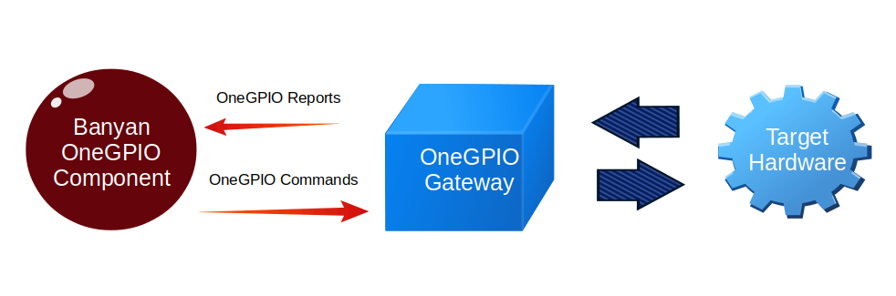

Introduction To The OneGPIO Message API
Unlike traditional GPIO libraries that use a hardware specific method call API interface, OneGPIO uses a Banyan Messaging API interface. The OneGPIO Specification provides Banyan message templates for all OneGPIO commands and reports. The OneGPIO Specification is a hardware and computer language independent abstraction of GPIO operations.
A OneGPIO Command Message is published by a OneGPIO Application Component to transmit GPIO command information to the target hardware.
A OneGPIO Report Message is published by a OneGPIO Gateway, after receiving report data from the target hardware. Because the Gateway is translating native report messages into OneGPIO messages, the has the freedom to add additional data to the report message, such as a time stamp.

A command message contains the key word command and a report contains the key word report
In general, a GPIO pin must have its mode set before use. For example to set a pin to digital output mode, you would use the following message template:
| GPIO Operation | OneGPIO Message |
|---|---|
| Set Pin To Digital Output Mode | {"command": "set_mode_digital_output", "pin": PIN, "tag":”TAG” } |
When setting a pin mode, you have the option to name or tag the pin. This helps to improve code readability when interacting with that pin. You may reference the pin using either its tag or pin number interchangeably. However, if you wish to use a tag, the tag must be set when the pin mode is set.
The pin tag to pin number mapping is automatically maintained within the OneGPIO Gateways.
To illustrate let's populate the 'set_mode_digital_output' command message to set pin 4 as a digital output pin and tag the pin with "green_led.
{'command': 'set_mode_digital_output', 'pin': 4, 'tag': 'green_led' }
Notice that pin is an integer and not a string.
All OneGPIO message keys are strings. Within the OneGPIO message specification, if a value is not within quotes, then it is specified as an integer, otherwise, it is specified as a string.
The OneGpio command to set the state of a digital output pin is:
| GPIO Operation | OneGPIO Message |
|---|---|
| Set Digital Output Pin State | {"command": "digital_write", "pin": PIN, "tag": "TAG", "value": VALUE} |
Now that the pin mode has been set with a tag, we can set the green LED to on with the following message:
{'command': 'digital_write', 'tag': 'green_led', 'value': 1 }
We do not need to specify the pin number since we specified a tag when we set the pin mode. Also notice, that the value is an integer and not a string.
If a pin tag is created when setting the pin mode, you may use either the tag or pin number when referencing the pin in a command.
To port a OneGPIO application to a different hardware platform, you need only change the pin number for the chosen hardware platform. This can easily be implemented using command line arguments when designing the component.